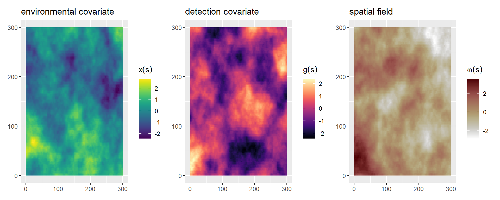
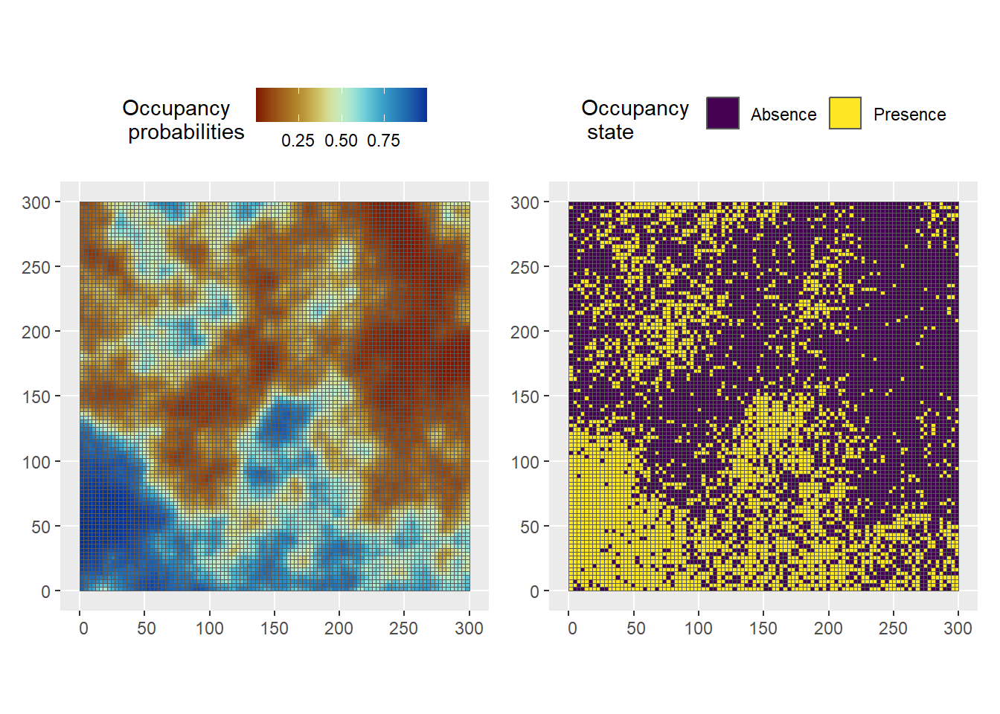
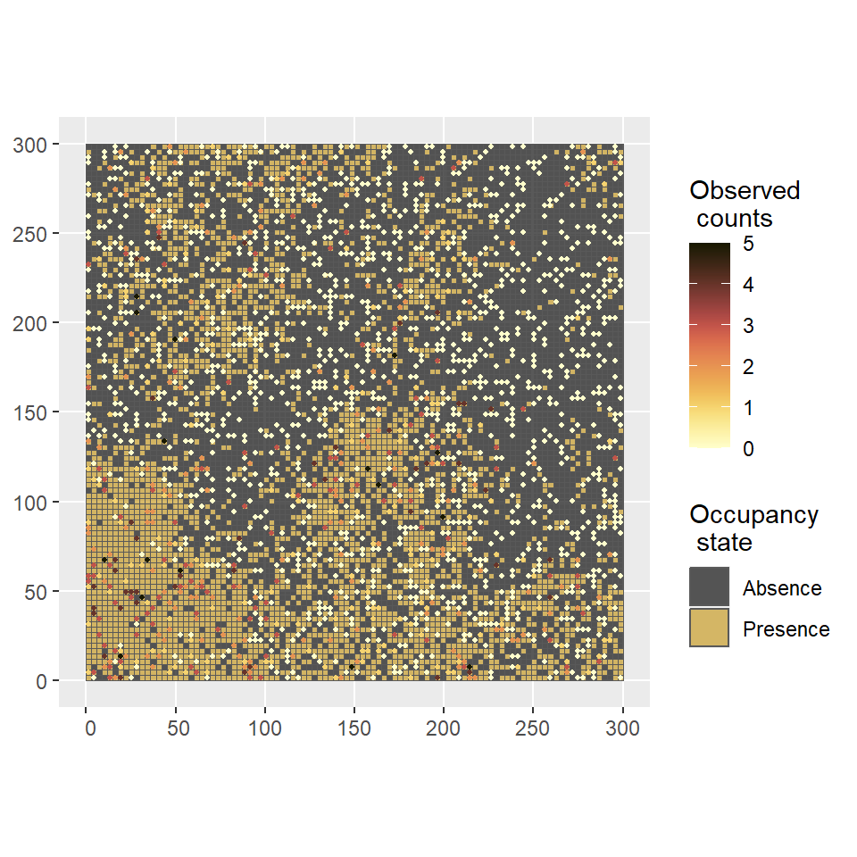
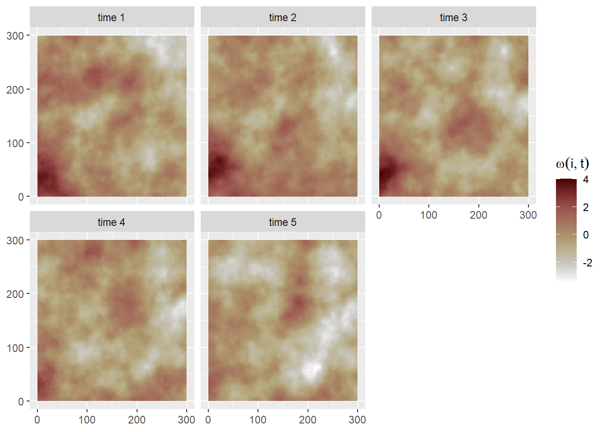
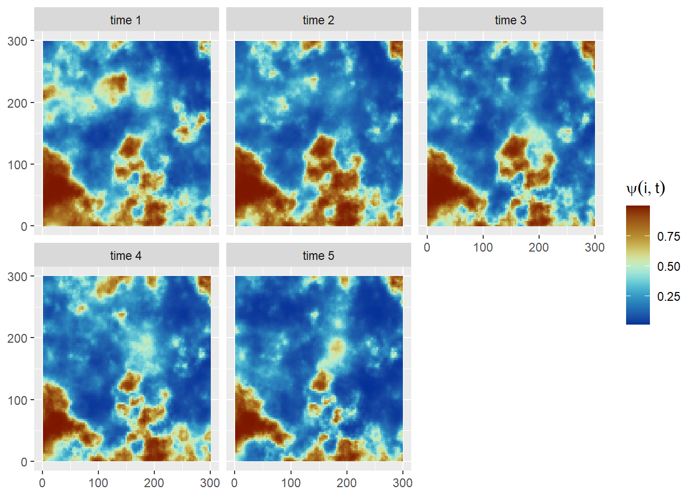

Data Simulation
This section describes the steps to simulate occurrence data for fitting spatially explicit occupancy models in R-INLA.
Set up
Define the spatial domain and the regular lattice by setting a \(300 \times 300\) study area divided into \(5\times5\) grid cells.
Code
# Define spatial domain
win <- owin(c(0,300), c(0,300))
npix <- 1000
Domain <- rast(nrows=npix, ncols=npix,
xmax=win$xrange[2],xmin=win$xrange[1],
ymax = win$yrange[2],ymin=win$yrange[1])
values(Domain) <- 1:ncell(Domain)
xy <- crds(Domain)
# Define regular grid
cell_size = 3
customGrid <- st_make_grid(Domain,cellsize = c(cell_size,cell_size)) %>%
st_cast("MULTIPOLYGON") %>%
st_sf() %>%
mutate(cellid = row_number())
# number of cells
ncells <- nrow(customGrid)
Simulate data for a simple spatial occupancy model
We simulate three different Gaussian Markov Random fields (GMRF) using the inla.qsample function.
Code
# Spatial boundary
boundary_sf = st_bbox(c(xmin = 0, xmax = 300, ymax = 0, ymin = 300)) |>
st_as_sfc()
# Create a fine mesh
mesh_sim = fm_mesh_2d(loc.domain = st_coordinates(boundary_sf)[,1:2],
offset = c(-0.1, -.2),
max.edge = c(4, 50))
# Matern model
matern_sim <- inla.spde2.pcmatern(mesh_sim,
prior.range = c(100, 0.5),
prior.sigma = c(1, 0.5))
range_spde = 100
sigma_spde = 1
# Precision matrix
Q = inla.spde.precision(matern_sim, theta = c(log(range_spde),
log(sigma_spde)))
# Simulate three spatial fields
seed = 12345
sim_field = inla.qsample(n = 3, Q = Q, seed = seed)Create the projector matrix A_proj using the centroid of each grid cell as coordinates and compute the spatial random effect \(\omega(s)\), spatial environmental covariate \(x(s)\) and spatial detection covariate \(g(s)\) (Figure 2). (Note: Covariates \(x(s)\) and \(g(s)\) are stored as raster data).
Code
# Obtain the centroid of each cell
coord_grid = st_coordinates(customGrid |> st_centroid())
# A matrix
A_proj = inla.spde.make.A(mesh_sim, loc = coord_grid)
# Spatial components
omega_s = (A_proj %*% sim_field)[,1] # spatial random field
x_s = (A_proj %*% sim_field)[,2] # spatial environmental covariate
g_s = (A_proj %*% sim_field)[,3] # spatial detection covariate
# create rasters
x_rast = rast(data.frame(x = coord_grid[,1], y = coord_grid[,2],x_s))
g_rast = rast(data.frame(x = coord_grid[,1], y = coord_grid[,2],g_s))
# save raster data
writeRaster(x_rast,filename = paste('raster data','x_covariat.tif',sep='/'),
overwrite=TRUE)
writeRaster(g_rast,filename = paste('raster data','g_covariat.tif',sep='/'),overwrite=TRUE)
Occurrence data is simulated from the following occupancy model:
\[\begin{align} \mbox{State process:}& \begin{cases} z_i \sim \mathrm{Bernoulli}(\psi_i) \nonumber \\\mathrm{logit}(\psi_i) = \beta_0 + \beta_1 \ x(s) + \omega(s) \\ \end{cases}\\ \mbox{ Observational process:}& \begin{cases} y_i \sim \mathrm{Binomial}(K_i,z_i \times p_i) \nonumber \\\mathrm{logit}(p_i) = \alpha_0 + \alpha_1 \ g(s) \\ \end{cases} \end{align}\]State process model sub-component
Define model parameters \(\beta\) and compute the occupancy probabilities \(\psi\) and occupancy states \(z\) (Figure 3)
Code
# State process model coeficcients
beta <- c(NA,NA)
beta[1] <- qlogis(0.3) # Base line occupancy probability
beta[2] <- 1.5 # environmental covariate effect
# Occupancy probabilities
psi <- inla.link.logit(beta[1] + beta[2]*x_s + omega_s, inverse = T)
# True occupancy state
set.seed(seed)
z <- rbinom(ncells, size = 1, prob = psi)
Observational process model sub-component
Random sample of 20 % of the total cells and draw a random number of \(K\) visits per cell by setting a minimum of 1 and a maximum of 5 visits per site/cell.
Code
# number of cells/sites in the sample
nsites = round(ncells*.20)
site_id = sample(1:ncells, size=nsites, replace=FALSE) # cell id
# add an indicator of whether a cell is in the sample or not
customGrid$sample <- ifelse(customGrid$cellid%in%site_id,1,0)
min_nvisits = 1 # minimum number of visits
max_nvisits = 5 # maximum number of visits
# Probabiliies of drawing 1 thru 5 visits per site
probs = rep(1/length(min_nvisits:max_nvisits),length(min_nvisits:max_nvisits))
# Number of visits
nvisits = sample(min_nvisits:max_nvisits,nsites, prob = probs, replace = T)Define model parameters \(\alpha\) , detection probabilities \(p\) and observed number of occurrences per site \(y\) (Figure 4):
Code
# Observational process model coeficcients
alpha <- c(NA,NA)
alpha[1] <- qlogis(0.6) # Base line detection probability
alpha[2] <- 1 # detection covariate effect
# Detection probabilities
p <- inla.link.logit(alpha[1] + alpha[2]*g_s[site_id], inverse = T)
y <- rbinom(n = nsites,size = nvisits,prob = p*z[site_id] )Create data set Table 1:
Code
# centroid of the cell
Occ_data_1 <- customGrid |>
st_centroid() |>
filter(sample==1) |>
dplyr::select(-c('sample'))
y_counts = data.frame(y = y , cellid = site_id, nvisits = nvisits)
Occ_data_1 <- left_join(Occ_data_1,y_counts,by = "cellid")
# append coordinates as columns
Occ_data_1[,c('x.loc','y.loc')] <- st_coordinates(Occ_data_1)
Occ_data_1 = st_drop_geometry(Occ_data_1)
# Save CSV file for analysis
write.csv(Occ_data_1,file='Occ_data_1.csv',row.names = F)| cellid | y | nvisits | x.loc | y.loc |
|---|---|---|---|---|
| 2 | 0 | 5 | 4.5 | 1.5 |
| 5 | 3 | 4 | 13.5 | 1.5 |
| 6 | 2 | 3 | 16.5 | 1.5 |
| 7 | 4 | 5 | 19.5 | 1.5 |
| 9 | 0 | 1 | 25.5 | 1.5 |
| 23 | 0 | 4 | 67.5 | 1.5 |

Simulate space-time occupancy data
Here we simulate data for a space-time occupancy model by defining a SPDE for the spatial domain and an autoregressive model of order 1, i.e. AR(1), for the time component (this is separable space-time model where the spatio-temporal covariance is defined by the Kronecker product of the covariances of the spatial and temporal random effects, see (Cameletti et al. 2012) for more details).
We set a total of nT = 5 discrete time points where the occupancy state changes. We can use the book.rspde() function available in the spde-book-functions.R file (Krainski et al. 2018) to simulate \(t = 1,\ldots,nT\) independent realizations of the random field1. Then, temporal correlation is introduced:
\[ \omega(s_i,t) = \rho \ \omega(s_i,t-1) + \epsilon(s_i,t), \]
where \(\pmb{\epsilon} \sim N(0,\Sigma = \sigma_{\epsilon}^2\tilde{\Sigma})\) are the spatially correlated random effects with Matérn correlation function \(\tilde{\Sigma}\) and \(\rho=0.7\) is the autoregressive parameter (\(\sqrt{1-\rho^2}\) is included so \(\omega(s_i,1)\) comes from a \(N(0,\Sigma/(1-\rho^2)\) stationary distribution; see (Cameletti et al. 2012)).
Code
# load helping functions
source('spde-book-functions.R')
# Time points
nT = 5
# parameters of the Matern
# Create a fine mesh
mesh_sim = fm_mesh_2d(loc.domain = st_coordinates(boundary_sf)[,1:2],
offset = c(-0.1, -.2),
max.edge = c(4, 50))
# Matern model
params <- c(sigma = sigma_spde, range = range_spde)
# generate samples from the random field
epsilon.t <- book.rspde(coord_grid, range = params[2], seed = seed,
sigma = params[1], n = nT, mesh = mesh_sim,
return.attributes = TRUE)
# temporal dependency
rho <- 0.65
omega_st <- epsilon.t
for (t in 2:nT){
omega_st[, t] <- rho * omega_st[, t - 1] + sqrt(1 - rho^2) * epsilon.t[, t]
}
Then we can simulate the occupancy state of cell \(i\) at time \(t\) (Figure 6) as follows:
\[\begin{align}z_{it}&\sim \mathrm{Bernoulli}(\psi_{it})\nonumber\\\mathrm{logit}(\psi_{it}) &= \beta_0 + \beta_1\ x_i + \beta_2 x^2_i + \omega_{it}.\end{align}\]Code
# State process model coeficcients
beta <- c(NA,NA,NA)
beta[1] <- qlogis(0.2) # Base line occupancy probability
beta[2] <- 0.75 # environmental covariate effect
beta[3] <- 1 # environmental covariate quadratic effect
z.mat = psi.mat = matrix(NA,ncol=nT,nrow=dim(coord_grid)[1])
for(t in 1:nT){
# Occupancy probabilities
psi.mat[,t] = inla.link.logit(beta[1] + beta[2]*x_s + beta[3]*x_s**2 + omega_st[,t], inverse = T)
# True occupancy state
z.mat[,t] <- rbinom(ncells, size = 1, prob = psi.mat[,t])
}
Notice that we can use different locations at different times, e.g. when locations are not surveyed regularly. To simulate this we allow for some sites to be missing from the sample across years, by setting the minimum number of visits to zero . We also change the number of visits per year/site combination.
Code
min_nvisits = 0 # minimum number of visits
max_nvisits = 5 # maximum number of visits
# Probabiliies of drawing 1 thru 5 visits per site
probs = rep(1/length(min_nvisits:max_nvisits),length(min_nvisits:max_nvisits))
# Number of visits per site/year combination
nvisits.mat = matrix(NA,ncol=nT,nrow=nsites) # empty matrix to store the results
for(t in 1:nT){
nvisits.mat[,t] = sample(min_nvisits:max_nvisits,nsites,
prob = probs, replace = T)
}
nvisits.mat[nvisits.mat==0]=NA # add NA for cells that were not visitedNow we compute the observed counts as before:
Code
# Observational process model coeficcients
alpha <- c(NA,NA)
alpha[1] <- qlogis(0.3) # Base line detection probability
alpha[2] <- -1.5 # detection covariate effect
y.mat = p.mat = matrix(NA,ncol=nT,nrow=nsites)
for(t in 1:nT){
# Detection probabilities (constant through time)
p.mat[,t] = inla.link.logit(alpha[1] + alpha[2]*g_s[site_id], inverse = T)
# Observed occurrences
y.mat[,t] <- suppressWarnings(rbinom(n = nsites, size = nvisits.mat[,t],
prob = p.mat[,t]* z.mat[,t]))
}Finally, create and save data set.
Code
# centroid of the cell
Occ_data_2 <- suppressWarnings(customGrid |>
st_centroid()) |>
filter(sample==1) |>
dplyr::select(-c('sample'))
# Add data
Occ_data_2[,paste('y',1:nT,sep='')] = y.mat # counts
Occ_data_2[,paste('nvisit',1:nT,sep='')] = nvisits.mat # visits per year
# append coordinates as columns
Occ_data_2[,c('x.loc','y.loc')] <- st_coordinates(Occ_data_2)
Occ_data_2 = st_drop_geometry(Occ_data_2)
# Save CSV file for analysis
write.csv(Occ_data_2,file='Occ_data_2.csv',row.names = F)Spatially varying coefficients (SVC)
Here we simulate from a spatially varying coefficient model by adopting a space model with Matérn spatial covariance and a AR(1) time component. The same setting described for the space-time model will be used to drawn independent realization from the random field by using the book.rMatern()function. Then, temporal autocorrelation will be introduced to the dynamic regression coefficient \(\beta_t\) through the AR(1) structure described in the previous section (Note: The term \((1 - \rho^2)\) is added because of INLA internal AR(1) model parametrization; (Krainski et al. 2018)).
Code
# realization of the random field
set.seed(seed)
beta_t <- book.rMatern(nT, coord_grid, range = range_spde,
sigma = sigma_spde)
# introduce temporal correlation
beta_t[, 1] <- beta_t[, 1] / (1 - rho^2)
for (t in 2:nT) {
beta_t[, t] <- beta_t[, t - 1] * rho + beta_t[, t] *
(1 - rho^2)
}Occupancy probabilities (Figure 7) are then defined on the logit scale as:
\[ \mathrm{logit}(\psi_{it}) = \beta_0 + \beta_{1}(i)t + \omega(i) \]
where \(\omega(i)\) is the same field defined for the simple spatial occupancy model (Section 2). The detection probabilities and observed occurrences are simulated in the same way as before (see Section 3).
Code
#|
set.seed(seed)
# intercept and mean of the effect
beta0 <- -1
z.mat = psi.mat = matrix(NA,ncol=nT,nrow=dim(coord_grid)[1])
for(t in 1:nT){
# Occupancy probabilities
psi.mat[,t] = inla.link.logit(beta0 + beta_t[,t] + omega_s, inverse = T)
# True occupancy state
z.mat[,t] <- rbinom(ncells, size = 1, prob = psi.mat[,t])
}
# simulate data
for(t in 1:nT){
# Detection probabilities
p.mat[,t] = inla.link.logit(alpha[1] + alpha[2]*g_s[site_id], inverse = T)
# Observed occurrences
y.mat[,t] <- rbinom(n = nsites,
size = nvisits.mat[,t],
prob = p.mat[,t]*z.mat)
}
# centroid of the cell
Occ_data_3 <- customGrid |>
st_centroid() |>
filter(sample==1) |>
dplyr::select(-c('sample'))
# Add data
Occ_data_3[,paste('y',1:nT,sep='')] = y.mat # counts
Occ_data_3[,paste('nvisit',1:nT,sep='')] = nvisits.mat # visits per year
# append coordinates as columns
Occ_data_3[,c('x.loc','y.loc')] <- st_coordinates(Occ_data_3)
Occ_data_3 = st_drop_geometry(Occ_data_3)
# Save CSV file for analysis
write.csv(Occ_data_3,file='Occ_data_3.csv',row.names = F)
References
Footnotes
Note: If you are using INLA development version you might need modify the
book.rspde function. Specifically, change theinla.mesh.projectfunction tofmesher::fm_evaluatorfunction to project the mesh into the domain coordinates.↩︎